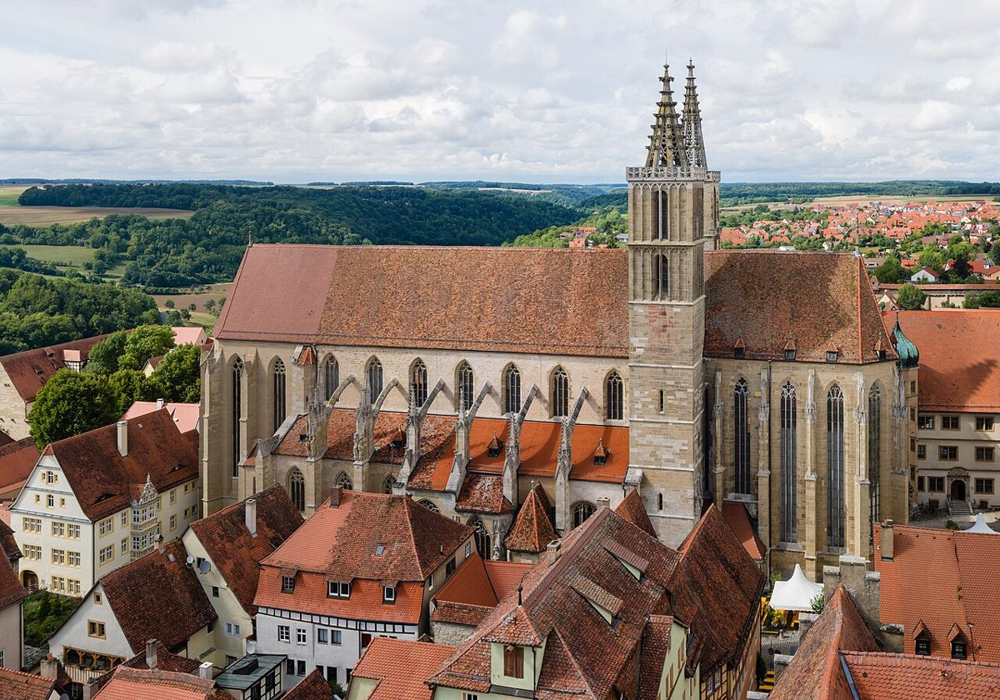

Rothenburg ob der Tauber: Ein Märchenstädtchen im Herzen Deutschlands

Rothenburg ob der Tauber ist wie aus einem Märchenbuch entsprungen. Das mittelalterliche Städtchen in Bayern verzaubert mit seinen engen Gassen, Fachwerkhäusern und einer fast vollständig erhaltenen Stadtmauer. Ob Tagesausflug oder längere Reise – hier findest du Inspiration für deinen Besuch.
Anreise nach Rothenburg ob der Tauber
Rothenburg ist gut mit dem Auto erreichbar, etwa 170 km von Nürnberg oder Frankfurt entfernt. Parkplätze gibt es vor den Stadttoren. Per Bahn gelangst du über Ansbach oder Steinach nach Rothenburg, meist mit Umstieg. Die gemütlichste Art ist eine Anreise entlang der Romantischen Straße, einer der beliebtesten Ferienstraßen Deutschlands.
Beste Reisezeit
Jede Jahreszeit hat ihren Charme: Im Frühling und Sommer grünt es, im Herbst leuchtet das Laub, und im Winter verwandelt sich Rothenburg in einen Weihnachtsmarkt-Traum. Wer Menschenmassen meiden möchte, kommt außerhalb der Hauptreisezeiten (Sommer & Adventszeit).
Highlights in Rothenburg
1. Spaziergang auf der Stadtmauer
Der Rundgang auf der historischen Stadtmauer bietet atemberaubende Aussichten und führt an malerischen Türmen vorbei. Ein Muss für jeden Besucher!
2. Marktplatz mit Rathaus
Herzstück der Stadt ist der Marktplatz mit dem imposanten Rathaus. Der Rathausturm kann bestiegen werden – oben wartet ein Panoramablick.
3. Plönlein
Dieses Postkartenmotiv schlechthin zeigt ein winziges Plätzchen mit Fachwerkhäusern, einem Brunnen – und dem berühmten Blick auf das Kobolzellertor.
4. Weihnachtsdorf von Käthe Wohlfahrt
Hier ist das ganze Jahr über Weihnachten! Der charmante Laden mit unzähligen Ornamenten und Dekorationen ist ein Fest für die Sinne.
5. Burggarten
Ein friedlicher Ort mit Blick ins Taubertal. Ideal für eine Pause oder romantische Momente.
Kulinarische Köstlichkeiten
Probier unbedingt eine echte Schneeball – ein knuspriges Gebäck in Kugelform, oft mit Puderzucker oder Schokolade überzogen. In den Gasthäusern wie dem Altfränkische Weinstube wartet fränkische Hausmannskost wie Sauerbraten oder Schäufele (ofengebackene Schweineschulter).
Rothenburg ob der Tauber ist ein Traum für Geschichts- und Architekturliebhaber. Mit seinen malerischen Fassaden, gemütlichen Cafés und der besonderen Atmosphäre hinterlässt es unvergessliche Eindrücke.
Haiktec
- 7 Power-Tipps für Selbstständige: So organisierst du deinen Arbeitstag effektiv
- Hochzeit-Budget-Tracker & Checklistenmanager 2026
- Clever sparen im Haushalt: 7 einfache Strategien für mehr finanziellen Spielraum
Text mit KI erstellt und automatisch geprueft.